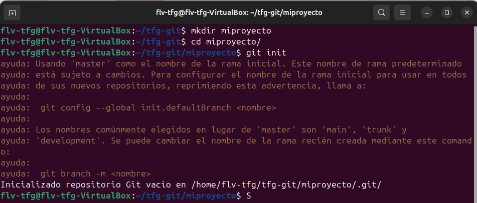

git initInicializa un nuevo repositorio Git en el directorio actual, creando la carpeta .git con toda la metadata necesaria. Este comando lo ejecutaremos en la terminal. El manejo del mismo podrá hacerse desde VS-Code o desde la terminal.

Dentro de la carpeta la cual queramos inicializar ejecutamos lo siguiente:
git init